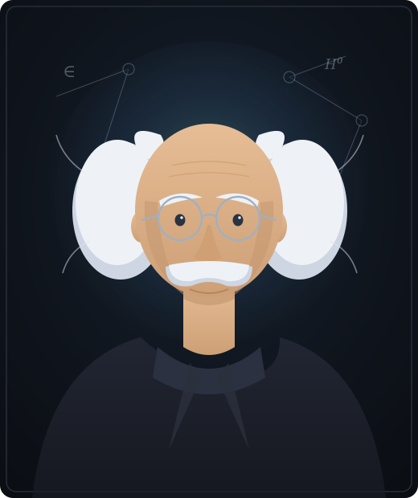
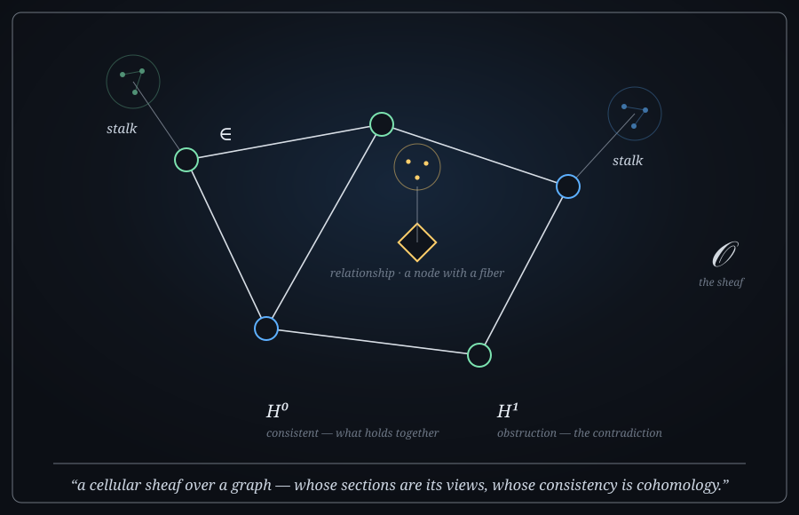

The oldest question in philosophy has a precise answer on a graph: to exist is to be an element of a set. Build on that — ground it in mathematics — and a graph stops describing the world and starts reasoning about it.

Begin with being
To exist is to be an element of a set.
A thing is if it belongs; what kind of thing it is, is which sets it belongs to. Sort those memberships and you have a taxonomy — the categorization of existence, universals and particulars, types and instances. This is what the graph world means by an ontology.
And the categories of being have always included one the dominant standards forgot: relation. A relationship is not glue between two real things — it is itself a real thing. So we make relationships first-class — nodes in their own right, carrying their own data. Reticulation, not reification.
Vector to the mathematics
Inference — derive what follows from what's said — is only the first floor. An operation's order is the order of structure it reaches over:
Model the graph as a cellular sheaf: data on every node and edge, with rules for how they must agree. A view becomes a section; consistency becomes cohomology — H⁰ is what holds together (knowledge), H¹ is the contradiction that can't (the obstruction). Grounding is driving H¹ toward zero.
The full consistency engine is the direction, not a shipped feature — we build toward it in the open. Read the math →

What this lets us build
Your LLM pipeline extracts a rich graph of concepts and how they relate — then your tools show almost none of it. A renderer only draws an edge when both endpoints are nodes, so the conceptual half — the ideas and how they connect — is never rendered, never traversed, never queried. The Intelligent Graph recovers that discarded layer as a non-destructive overlay, grounds it, and lets you act on it.
What it does
Read the source read-only; surface the relationships it extracted but couldn't display.
Type each raw relationship into a traversable graph — keeping the original string, so re-typing later is a single traversal, not a re-import.
Hitting a relationship can do something, not just return a row. The graph stops being a place you store knowledge and becomes one that runs.
Provenance is a property, not a supernode. Every step is reversible by construction. We attach to your graph; we never restructure it.
Why it's different
TIG + Solstone
The Intelligent Graph pairs with Solstone — Jeremie Miller's local-first memory platform — to turn a passive capture stream into a structured, queryable, annotatable graph. Sol captures and extracts; TIG recovers the discarded relationship layer, makes it traversable, and feeds curated interpretations back. Built for teams who want their own graph, on their own machine — not a hyperscale deployment.
Open core
The core is open source (Apache 2.0). A commercial layer adds the operational and agentic capabilities teams pay for.
Who's behind it
Built by Michael Bauer — a 35-year through-line from rule-based expert systems to a billion-node production graph. → michaelbauer.com
Featured at Neo4j NODES 2026, with Solstone: "The Graph Your Extractor Throws Away."